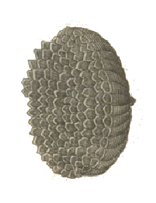
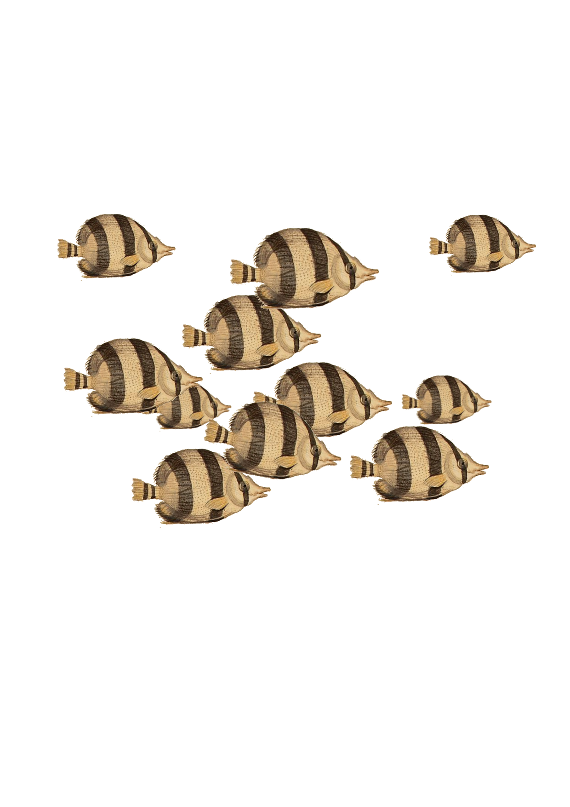

Wir sind keinesfalls Expertinnen für Insekten oder Artenvielfalt oder Umweltschutz. Jedoch
drängte sich uns im Kontext der historischen Zeichnungen die Betrachtung der zeitlichen
Entwicklung von Insektenarten und ihr Vorkommen im Zusammenhang mit Pflanzenvielfalt auf. Die
Zeichner:innen haben mit ihren (Auf-)Zeichnungen die Artenvielfalt
anschaulich dokumentiert und ermöglichen hiermit ein niederschwelliges Lernen.
Die obigen Texte sind gesammelte Aspekte aus den folgen Artikeln und Berichten.
Die obigen Texte sind gesammelte Aspekte aus den folgen Artikeln und Berichten.
- Mehr Infos zu der Bedeutung von Insekten
- Mehr Infos zum Insektensterben
- Der Insektenatlas: Insekten in der Landwirtschaft
Die verwendeten Insektenbilder stammen aus 'Ioannis Ionstoni Theatrvm
Vniversale Omnivm Animalivm Insectorvm' (BV008972922) von Jan Johnston und 'Der
Raupen wunderbare Verwandelung - 2' (BV009519003) von Maria Sibylla Merian.
Die ersten beiden Hintergrund Fotos sind von privat, das dritte ist von Marcin Jozwiak (zu
finden unter diesem Link.)


Wir sind keine Meeresbiologinnen. Die Farbigkeit und Details in den Korallenzeichnungen und
anderer Meereslebenswesen haben uns gefangen genommen, sodass wir auch diese verwenden wollten.
Vor allem vor dem Hintergrund, dass die Farbigkeit durch menschlichen Einfluss nach und nach
verloren gehen. Weitere Informationen zum Lebensraum Meer und den angesprochenen Problemen gibt es hier:
Die verwendeten Bilder stammen aus 'Deliciae Naturae Selectae - 1' (BV009474290) von Georg Wolfgang Knorr.
Die Hintergrundbilder sind in dieser Reihenfolge von: Silas Baisch (Link), Brian Yurasits (Link), Ahmed Areef (Link) Plastikflaschen Icon: Plastic icon Symbol durch Symbole8
Die verwendeten Bilder stammen aus 'Deliciae Naturae Selectae - 1' (BV009474290) von Georg Wolfgang Knorr.


Die Hintergrundbilder sind in dieser Reihenfolge von: Silas Baisch (Link), Brian Yurasits (Link), Ahmed Areef (Link) Plastikflaschen Icon: Plastic icon Symbol durch Symbole8